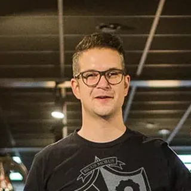
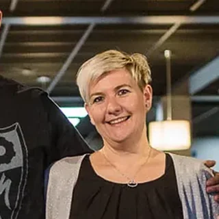
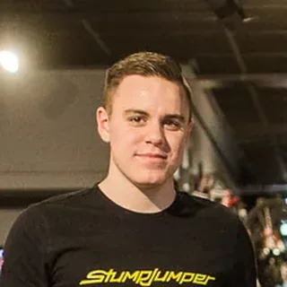
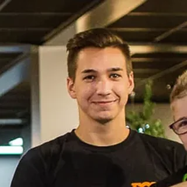

Achim
Zweiradmechaniker-Meister · Retül-zertifiziert
Werkstatt, individuelle Builds, Bikefitting und die Videos auf YouTube.

Das Team von Racepoint
Fahrradladen in Schönberg, seit rund 18 Jahren. Verkauf, Werkstatt für alle Marken und Retül-Bikefitting findest du bei uns im Laden.

Achim Leufgen · Zweiradmechaniker-Meister
„Ich bin der Achim aus den Videos. Bevor ein Bike unseren Laden verlässt, war es in meinen Händen, egal ob Kinderrad, E-Bike oder S-Works.“
Team · Schönberg
Achim ist Zweiradmechaniker-Meister und baut Bikes auf. Gemeinsam mit Elke und dem Team berät er dich im Laden in Schönberg. Sprüche gibt es dazu.

Zweiradmechaniker-Meister · Retül-zertifiziert
Werkstatt, individuelle Builds, Bikefitting und die Videos auf YouTube.

Racepoint · Schönberg
Gemeinsam mit Achim und dem Team berät Elke dich persönlich im Laden in Schönberg.


Mechaniker · Werkstatt
Die beiden schrauben in der Werkstatt an Rädern aller Marken: Service, Reparatur und Aufbau deines Bikes.
Seit 18 Jahren
Angefangen hat es mit dem Laden in Schönberg im Dreiländereck. Heute hat Achims YouTube-Kanal 80.000 Abonnenten.
Laden
Seit 18 Jahren in Ostbelgien, im Dreiländereck. Aachen und Lüttich sind rund eine Stunde entfernt, Luxemburg gut eine Stunde.
Handwerk
Inspektion, Reparatur, Fahrwerk und E-Bike-Service für alle Marken.
Partner
Als Specialized Elite Händler beraten wir dich bei der Auswahl und betreuen dein Bike danach in der Werkstatt.
Fitting
Achim ist Retül-zertifiziert. Mit 3D-Messung stellt er Sattel, Cockpit und Cleats auf dich ein.
Vor der Kamera
Bike-Builds und Werkstatt-Wissen auf @racepointbikeshop.
Filme